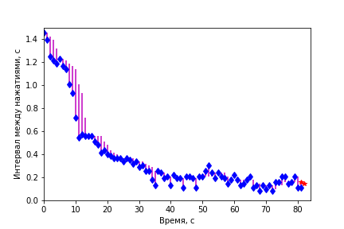
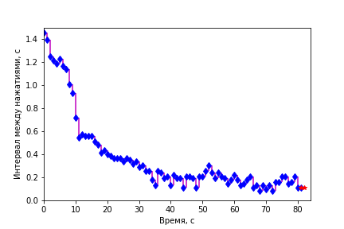

Компоненты нелинейного процесса¶
Для процессов, в которых есть периодические составляющие, прогнозные модели на основе простой экстраполяции текущего состояния работают плохо. В правой части рисунка (Рис. 16), где данные (черные точки), представляющие собой синусоиду (темно-синяя линия) с шумом, закончились, видно, что регрессионная модель SVR (красная линия) не может прогнозировать продолжение колебаний, останавливаясь на некотором уровне. Модели KRR и GPR (голубая и оранжевая линии) способны прогнозировать будущие колебания. Модель GPR (Gaussian Process Regression) кроме среднего значения предсказывает дисперсию (область разброса) значений: область наиболее вероятного появления данных с учётом шума показана полупрозрачным оранжевым поясом вокруг оранжевой линии.
{kind=link}
Подберем параметры Гауссова процесса для данных в тесте ускорения нажатий. Подставьте ссылку на собственные данные, если вы прошли тест по инструкции.
import pandas as pd
from sklearn.gaussian_process import GaussianProcessRegressor
from sklearn.gaussian_process.kernels import RBF, WhiteKernel, ConstantKernel as Constant, \
Matern, PairwiseKernel, Exponentiation, RationalQuadratic
u='http://stireac.com/uskor/result.tsv/sherdim%40gmail.com/10.132.32.111__6158019760000190311'
M = pd.read_table(u)
M = M.rename(columns={'v':'code'})
M.info()
<class 'pandas.core.frame.DataFrame'>
RangeIndex: 1000 entries, 0 to 999
Data columns (total 2 columns):
# Column Non-Null Count Dtype
--- ------ -------------- -----
0 t 1000 non-null float64
1 code 1000 non-null int64
dtypes: float64(1), int64(1)
memory usage: 15.8 KB
Извлечем из списка маркеров информацию о нажатиях с разбивкой по этапам.
R = []
for itrial in range(6):
coab = (1000 + itrial)+1
tab = M.t[M.code==coab].iloc[0]
tad = M.t[(M.t>tab) & (M.code==13)].iloc[0]
_R = M[(M.t>=tab)&(M.t<tad)].copy()
_R['trial']=itrial+1
# _R['d']=np.nan
# оставляем только нажатия (коды отжатия < 0)
_R = _R[(_R.code > 20) & (_R.code < 100)]
# выравниваем по времени относительно начала этапа
_R.t -= tab
_R.dropna(inplace=True)
_R['iri'] = _R.t.diff()
R.append(_R)
R = pd.concat(R)
R.shape
(445, 4)
Этапы отличаются между собой порядком нажатия на кнопки F и J, коды которых маркируют моменты нажатия.
(ord('F'), ord('J'))
(70, 74)
R.groupby(['trial','code']).code.count()
trial code
1 70 48
2 74 45
3 70 43
74 43
4 70 48
74 49
5 70 22
74 62
6 70 60
74 25
Name: code, dtype: int64
Создадим справочную таблицу с паттернами этапов.
S = pd.DataFrame([
['00000000', 'одна рука'],
['11111111', 'одна рука'],
['10101010', 'поочередно'],
['01010101', 'поочередно'],
['01110111', 'паттерн'],
['10001000', 'паттерн'],
], columns=['pattern','тип'], index=arange(6)+1)
#S
Рисунок с нелинейными трендами¶
Для построения рисунка мы для каждого этапа выводим исходные данные и накладываем на них в том же цвете модель (среднее и стандатное отклонение).
Данными, динамику которых мы моделируем, являются интервалы между нажатиями, которые рассчитываются в строке
vv = np.diff(tt)
Обученная модель Гауссова процесса хранится в переменной gpor.
Из объекта модели мы извлекаем ряд параметров, которые сводим в таблицу параметров P, которую выводим в конце.
fig, ax = plt.subplots(1, 1, figsize=(12,5))
kernel = (Constant(1**2, (1e-6, 2.))
+ 0.05 * Matern(length_scale=20.0, length_scale_bounds=(3, 1e3), nu=1.5)
+ WhiteKernel(noise_level=1e-2, noise_level_bounds=(1e-5, 1e3))
)
k = 1.
papa = []
coco = cm.tab20(arange(6))
for itrial, co in zip(arange(6)+1, coco):
_R = R[R.trial==itrial]
if len(_R)<5:
continue
tt = _R.t.values[1:] - _R.t.values[0]
tt = tt[np.isfinite(tt)]
vv = np.diff(tt) #_R.iri.values[1:]
bb = vv < 1.6
tt, vv = tt[np.r_[True, bb]], vv[bb]
X = np.reshape(tt[1:],(-1,1))
y = np.reshape(vv,(-1,1))
gpor = GaussianProcessRegressor(kernel, alpha=1e-5, n_restarts_optimizer=0).fit(X, y)
pa = {'label':S.loc[itrial, 'pattern']}
pa['R2'] = gpor.score(X,y)
pa['LML'] = gpor.log_marginal_likelihood_value_
pa['n'] = len(vv)
pa['totalvar'] = np.var(vv)
_th = np.exp(gpor.kernel_.theta)
pa['const'] = np.sqrt(_th[0])
pa['a'] = np.sqrt(_th[1])
pa['period'] = _th[2]
pa['noise'] = _th[3]
papa.append(pa)
plot(tt[1:],vv,'.', color=co, alpha=.5, label='_nolegend_')
xx = tt
y_mean, y_std = gpor.predict(xx[:,np.newaxis], return_std=True)
y_mean = y_mean.flatten()
plt.plot(xx, y_mean, color=co, lw=4, alpha=.8, zorder=9, label=pa['label'])
plt.fill_between(xx, y_mean - k * y_std, y_mean + k * y_std,
alpha=0.1, color=co)
plt.xlabel('Время, с');
plt.ylabel('Интервал между нажатиями, с');
# plt.ylim(0,1.2)
legend(frameon=False);
P = pd.DataFrame(papa)
P = P.set_index('label')
display(P[['const','a','period','noise', 'LML','R2']])
| const | a | period | noise | LML | R2 | |
|---|---|---|---|---|---|---|
| label | ||||||
| 00000000 | 0.001222 | 0.497643 | 11.969143 | 0.000298 | 98.296158 | 0.993221 |
| 11111111 | 0.483434 | 0.706720 | 10.677941 | 0.000237 | 86.502677 | 0.998162 |
| 10101010 | 0.274411 | 0.887480 | 18.219857 | 0.001319 | 134.393564 | 0.984961 |
| 01010101 | 0.003352 | 1.062370 | 34.062973 | 0.001981 | 142.929722 | 0.978169 |
| 01110111 | 0.003453 | 0.929588 | 24.105527 | 0.000766 | 138.942631 | 0.993141 |
| 10001000 | 0.640024 | 0.646241 | 13.025212 | 0.001462 | 120.531530 | 0.989695 |
По параметру period можно сравнить выявленный колебательный компонент в с. Более пологий спуск соотвествует более длительному периоду колебаний.
Попробуйте поменять параметры регуляризации при обучении Гауссова процесса. Гиперпараметр
alpha, по умолчанию равный 1e-10 (0.0000000001), нужен для предотвращения потенциальных вычислительных проблем во время подгонки модели. Если его увеличить (сделать не таким ничтожным), то будут подобраны более плавные модели, не повторяющие столь подробно динамику процесса. Повышайте параметрalphaна порядок, начиная от 1e-3 до 1e0. Как изменяются параметры найденых моделей? В какой момент модели утрачивают способность описать переходный процесс? Игнорируйте предупреждения о проблемах сходимости модели.
Гиперпараметр - это параметр для управления процессом обучения по подбору других параметров.
Прогноз¶
Воспользуемся уже рассмотренными ранее способами оценки качества прогноза для одного из этапов.
def play_prognoz(k='prognoz', n_future = 1, k0='v', interval=500):
xx=D.index.values
tt= xx[:-1]
fig = figure()
xlim(0,len(D.index)+1); ylim(0,1.5);
hh=[]
hh.append( plot([],[], color='b', lw=0, marker='d')[0] )
hh.append( plot(xx[0],D[k][0], color='r', marker='*')[0] ) #prognoz
hh.append( vlines([],[],[], colors='pink') ) #residuals
xlabel('Время, с');
ylabel('Интервал между нажатиями, с');
def updatefig(i):
hh[0].set_data(xx[:i+1], D[k0][:i+1])
hh[1].set_data(xx[[i,i+n_future]], D[k][[i,i+n_future]])
res1=vstack([tile(xx[i],(2,)), [D.loc[i,k0],D.loc[i,k]]]).T
hh[2].set_segments((hh[2].get_segments() + [res1]))
return hh
close()
ani = animation.FuncAnimation(fig, updatefig, tt, interval=interval, blit=True, repeat=False)
return ani
Переменные vv и y_mean содержат данные и предсказания Гауссова процесса для последнего 6-го этапа. Организуем их в таблицу.
Добавим помимо подогнанной модели Гауссова процесса (не забудьте вернуть гиперпараметр в исходное состояние и получить качественные модели) несколько простых сглаживающих моделей.
D = pd.DataFrame(vv, columns=['v'])#, index=tt[1:])
D['pro_gaupro'] = y_mean[1:]
D['pro_prev']= D.v.shift()
D['pro_median5']=D.v.rolling(5, min_periods=1).median().shift()
D['pro_mean5']=D.v.rolling(5, min_periods=1).mean().shift()
D['pro_ewma']=D.v.ewm(span=5, min_periods=1).mean().shift()
play_prognoz('pro_median5')

play_prognoz('pro_prev')

def quo(k):
'''чем больше отклонение - тем ниже эффективность'''
return 1/sqrt(mean((D.v - D[k])**2))
# vidy = [_k for _k in D.columns if _k.startswith('pro_')]
vidy = ['pro_prev', 'pro_mean5', 'pro_median5', 'pro_ewma', 'pro_gaupro']
Q = pd.Series(map(quo, vidy), index=vidy)
Q
pro_prev 16.387643
pro_mean5 9.907941
pro_median5 9.497796
pro_ewma 10.681131
pro_gaupro 20.683305
dtype: float64
Прогноз по предыдущему значению имеет преимущество для резких переходных процессов, поскольку обладает минимальной «памятью» о прошлых значениях.
Компоненты процесса можно вычитать из общей динамики, и, таким образом, строить прогнозы с учетом разных сочетаний компонентов: медленных трендов, циклов, шума.